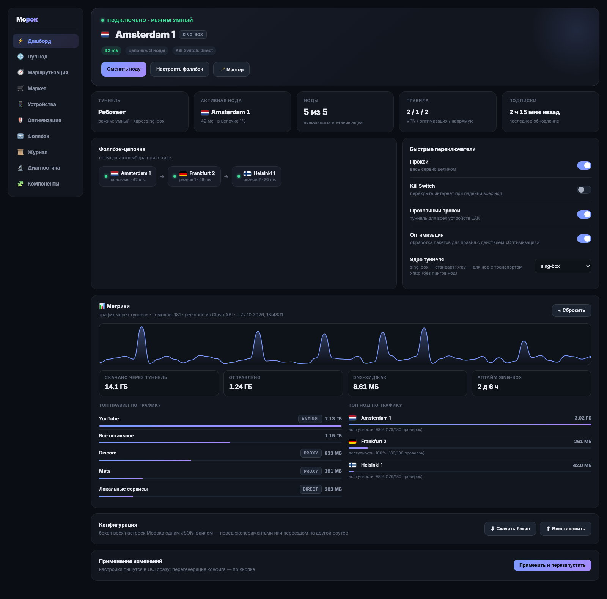
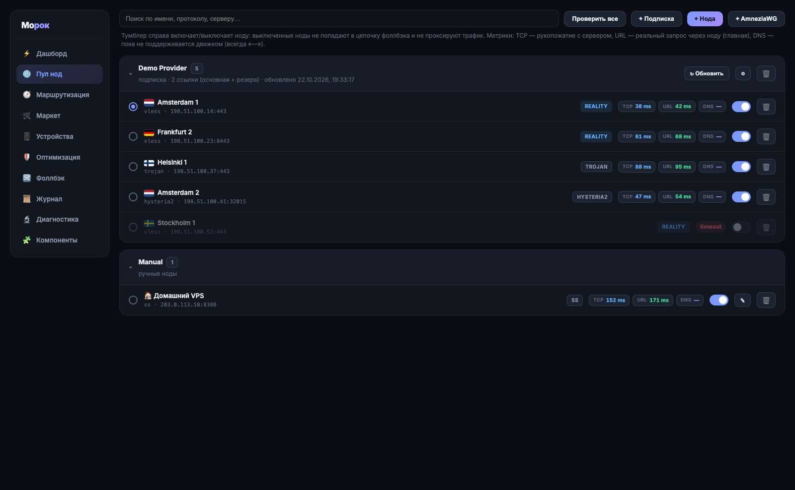
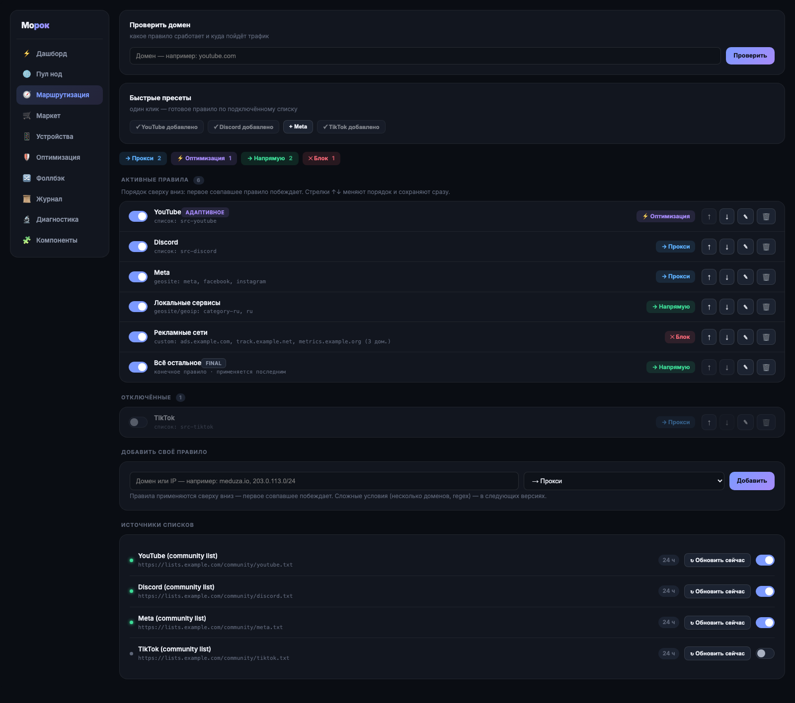
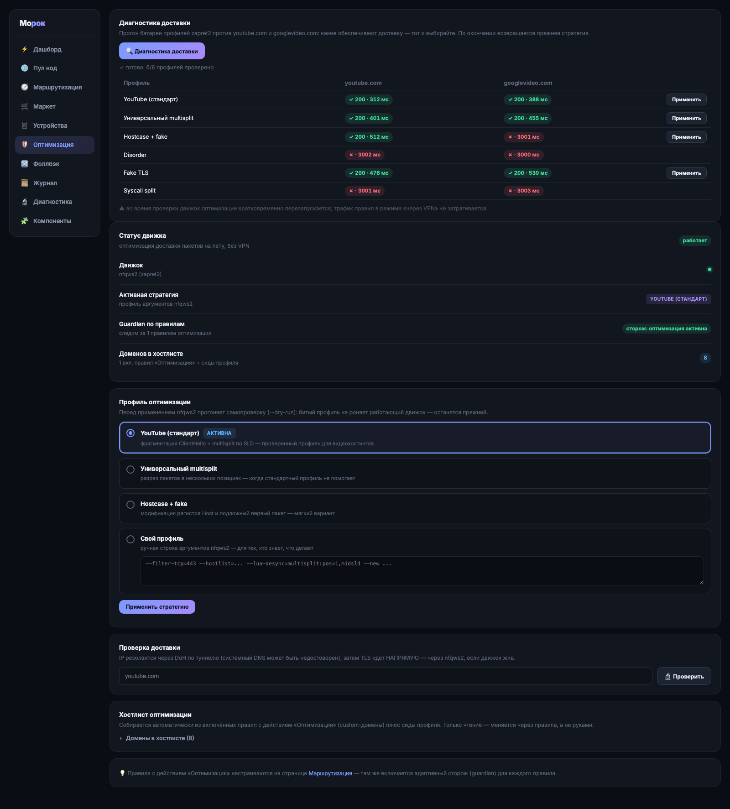
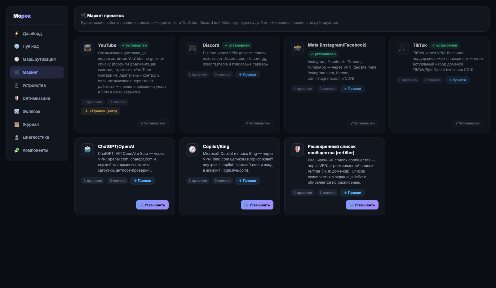
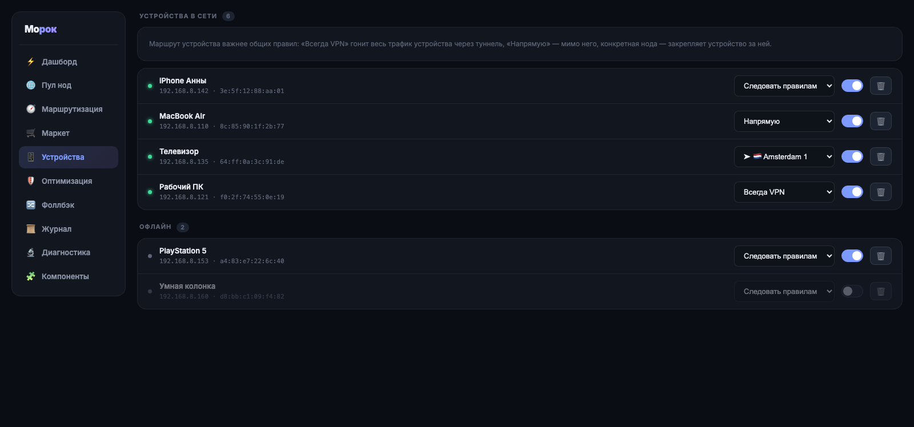
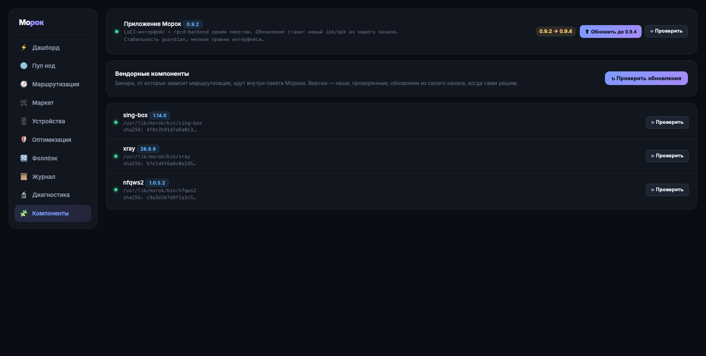

Старославянское «наваждение, обман зрения».
Умная маршрутизация и оптимизация доставки до любых сервисов прямо на роутере —
для всех устройств в сети разом.
Замена PassWall с нормальным UX: поставил — и управляешь трафиком всей сети.
tproxy на sing-box или xray — оба ядра внутри пакета, переключение одной кнопкой. На устройствах настраивать нечего.
zapret2/nfqws2 из коробки: профили фрагментации пакетов для стабильной доставки до видеохостингов и других сервисов, адаптивные стратегии со сторожем guardian.
Готовые списки (YouTube, Discord, Meta, списки сообщества re:filter ~81k доменов), geosite/geoip, кастомные правила — что в туннель, что напрямую, что на оптимизацию.
Нода перестала отвечать — переключились на следующую живую. Kill switch на выбор: перекрыть трафик, пустить напрямую или ничего не трогать.
Телевизор — через прокси, рабочий ноут — напрямую, консоль — через конкретную ноду. Per-device маршруты по MAC.
Метрики, графики скорости, журнал решений: что происходит с трафиком и почему выбрана именно эта нода. Ничего не ломается молча.
Тёмная тема, живые метрики, никакой магии — всё видно и управляется мышкой.







На скриншотах — вымышленные демонстрационные данные оффлайн-стенда, не реальные серверы.
Одна команда по SSH. Канал раздаётся через jsdelivr — работает там, где GitHub raw недоступен.
ssh root@192.168.8.1 — GL.iNet Flint 2 или любой OpenWrt 23.05+
curl -fsSL https://cdn.jsdelivr.net/gh/akurach/morok@main/build/install.sh | sh
Сам определит opkg/apk, скачает релиз, проверит sha256, поставит зависимости.
LuCI → Services → Морок. VLESS / VMess / Trojan / SS / Hysteria2 / TUIC / AmneziaWG.
Режим smart: выбранные списки — в туннель или на оптимизацию доставки, остальное — напрямую. Автообновление подписок и списков по расписанию.
Архитектура сборки — aarch64_cortex-a53 (MediaTek Filogic 830 и др.). Нужно ~64 МБ флеша и ≥ 256 МБ RAM.
| Прошивка | Пакетник | Пакет | Статус |
|---|---|---|---|
| GL.iNet Flint 2 (4.x) | opkg | .ipk | ✓ первичная платформа |
| OpenWrt 24.10 | opkg | .ipk | ✓ проверено |
| OpenWrt 23.05 | opkg | .ipk | ✓ проверено |
| OpenWrt 25.x | apk | .apk | ✓ проверено |